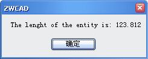

(vlr-object-reactor owners data callbacks)
Constructs a drawing object reactor object.
This function returns a drawing object reactor object.
The function accepts three arguments:
| Argument | Meaning |
|---|---|
| owners | A list containing VLA-objects representing the drawing objects to be watched. |
| data | Any AutoLisp data, if there is no data, it can be nil. |
| callbacks |
A list of pairs of the following form: (event-name . callback_function) event-name is one of the symbols listed below:
|
Examples
| Code | Result |
|---|---|
|
(vl-load-com) (defun c:object(/ vname vnamelist) (setq vname (vlax-ename->vla-object (car (entsel "\nselect an entity to link the reactor: ")))) (setq vnamelist (list vname)) (vlr-object-reactor vnamelist nil '((:vlr-modified . modified))) ) ;;;define the callback function (defun modified(notifier-object reactor_object param-list) (alert (strcat "The lenght of the entity is: " (vl-princ-to-string (vlax-get-property notifier-object 'Length)))) ) |
After you execute object command and select a line to link the reactor in the drawing, if you modify the entity (for example, move it), ZWCAD will open a dialog as following automatically:  |
|
(vl-load-com) (setq myCircle (defun print1(notifier-object reactor-object param-list) (defun c:test1() |
After you execute object command and select a line to link the reactor in the drawing, if you delete the entity (for example, E or delete), ZWCAD will call the function print1 automatically: |